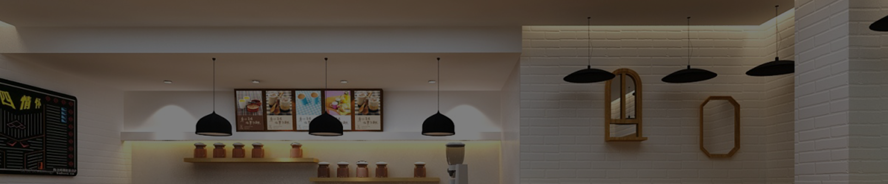
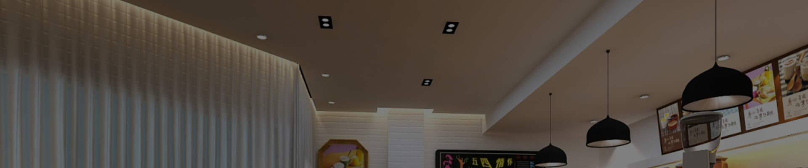
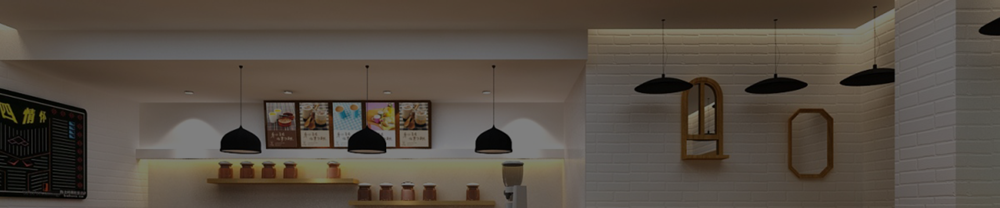
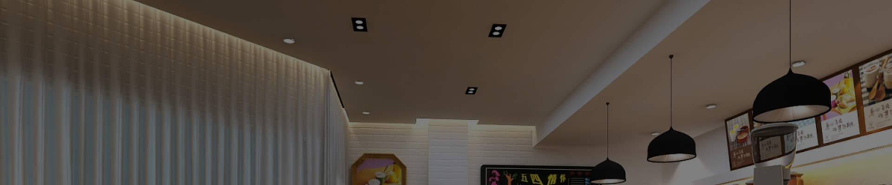

贾斯汀-比伯
DUZU 公司行动总裁
贾斯汀出生于1994年3月1日的加拿大安大略省伦敦的圣若瑟医院,并在安大略省的斯特拉特 福成长。小贾的母亲怀孕时年仅17岁,而他的父母结婚10个月后就离婚，因此他从小由自己的母 亲、外公和外婆养大。
贾斯汀从小对曲棍球、足球和国际象棋感兴趣，并一直追求自 己的音乐梦想。他从小自学了 钢琴、鼓、吉他和小号。从五岁起他就无师自通,自学了钢琴、打鼓、吉他和小号 ，华横溢的比 伯还非常热爱唱歌。他的歌声清脆而优美。早在2007年贾斯汀12岁时,在斯特拉特福德当地的歌 唱比赛中演唱尼欧的歌曲(So Sick》井获得了比赛的第二名。
查理-普斯
DUZU 公司行动经理
查理出生于1994年3月1日的加拿大安大略省伦敦的圣若瑟医院， 并在安大略省的斯特拉特 福成长。小查的母亲怀孕时年仅17岁,而他的父母结婚10个月后就离婚，因此他从小由自己的母 亲、外公和外婆养大。
查理从小对曲棍球、足球和国际象棋感兴趣， 并- 直追求自己的音乐梦想。 他从小自学 了 钢琴.鼓、吉他和小号。从五岁起他就无师自通,自学了钢琴、打鼓、吉他和小号 ，华横溢的比 伯还非常热爱唱歌，他的歌声清脆而优美。早在2007年查理12岁时 ，在斯特拉特福德当地的歌 唱比赛中演唱尼欧的歌曲《So Sick》并获得了比赛的第二二名。
艾薇儿-拉维尼
DUZU 公司策划
艾薇儿出生于1994年3月1日的加拿大安大略省伦敦的圣若瑟医院,并在安大略省的斯特拉特 福成长。小艾的母亲怀孕时年仅17岁,而他的父母结婚10个月后就离婚，因此他从小由自己的母 亲、外公和外婆养大。
艾薇儿从小对曲棍球、足球和国际象棋感兴趣，并- -直追求自己的音乐梦想。他从小自学 了 钢琴、鼓、吉他和小号。从五岁起他就无师自通,自学了钢琴、打鼓、吉他和小号 ，华横溢的比 伯还非常热爱唱歌,他的歌声清脆而优美。早在2007年贾斯汀12岁时 ,在斯特拉特福德当地的歌 唱比赛中演唱尼欧的歌曲(So Sick》并获得了比赛的第二名。
泰勒-斯威夫特
DUZU 公司总监
泰勒出生于1994年3月1日的加拿大安大略省伦敦的圣若瑟医院， 并在安大略省的斯特拉特 福成长。小泰的母亲怀孕时年仅17岁,而他的父母结婚10个月后就离婚，因此他从小由自己的母 亲、外公和外婆养大。
泰勒从小对曲棍球、足球和国际象棋感兴趣， 并一直追求自己的音乐梦想。 他从小自学 了 钢琴、鼓、吉他和小号。从五岁起他就无师自通，自学了钢琴、打鼓、吉他和小号 ，华横溢的比 伯还非常热爱唱歌,他的歌声清脆而优美。早在2007年贾斯汀12岁时 ,在斯特拉特福德当地的歌
-
贾斯汀·比伯
DUZU公司总裁
-
查理·普斯
Charlie Puth
-
艾薇儿·拉维尼
Avril Lavigne
-
泰勒斯·威夫特
Taylor Swift